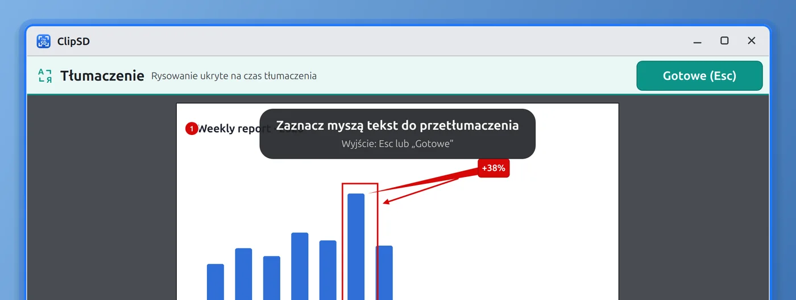
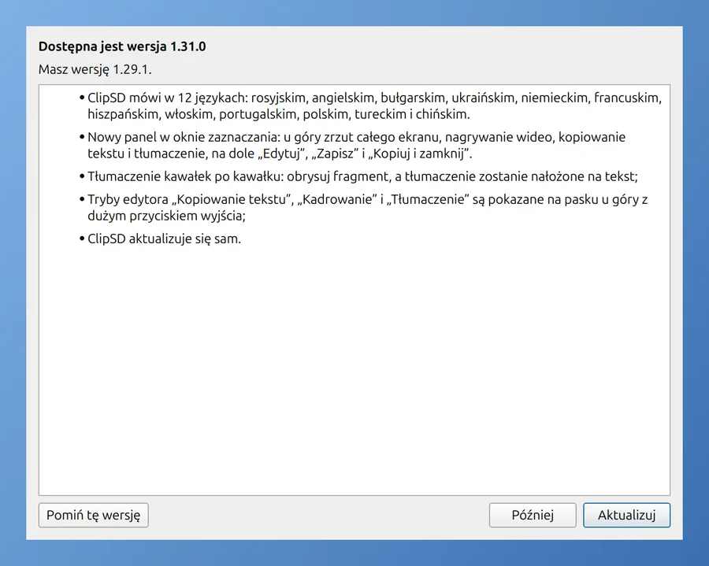

Historia wersji
Wersja 1.31.0
wydana
- ClipSD mówi w 12 językach: rosyjskim, angielskim, bułgarskim, ukraińskim, niemieckim, francuskim, hiszpańskim, włoskim, portugalskim, polskim, tureckim i chińskim. Język zmienia się od razu, bez ponownego uruchamiania: menu ikony przy zegarze, globus w edytorze, pierwszy krok przewodnika albo ustawienia.

- Nowy panel w oknie zaznaczania: u góry zrzut całego ekranu, nagrywanie wideo, kopiowanie tekstu i tłumaczenie, na dole „Edytuj”, „Zapisz” i „Kopiuj i zamknij”.

- Tłumaczenie kawałek po kawałku: obrysuj fragment, a tłumaczenie zostanie nałożone na tekst; obrysuj następny, a on również zostanie przetłumaczony. Esc kończy tryb.

- Tryby edytora „Kopiowanie tekstu”, „Kadrowanie” i „Tłumaczenie” są pokazane na pasku u góry z dużym przyciskiem wyjścia; Esc przywraca poprzednie narzędzie.

- ClipSD aktualizuje się sam. Raz dziennie sprawdza, czy jest nowa wersja, i proponuje „Aktualizuj”, „Później” albo „Pomiń tę wersję”. Aby sprawdzić od razu, wybierz z menu ikony „Sprawdź aktualizacje”. Aktualizacja jest weryfikowana za pomocą podpisu cyfrowego; jeśli nowa wersja się nie uruchomi, zostanie przywrócona poprzednia.
